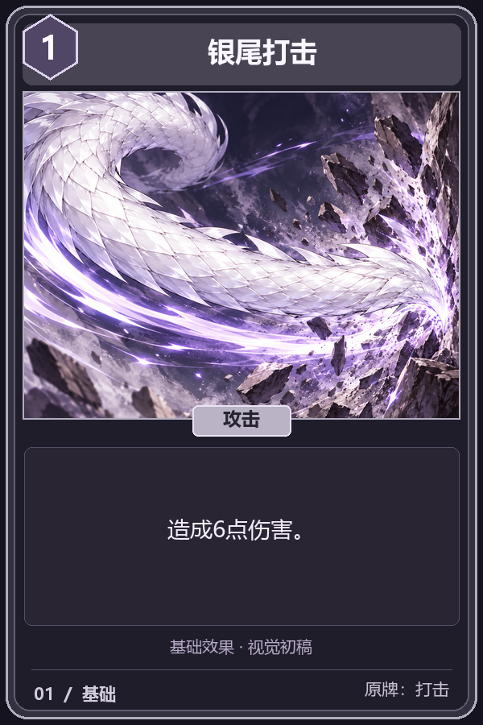
GPT 白银龙娘 · 美术资源与卡面
白发紫瞳、银色双角、淡紫龙翼与银鳞龙尾。人物设定、完整原图、卡牌插画和风格提示词集中在这里，欢迎一起改进。
人物资产
脸部、正面、左侧、背面与完整资产卡均保留原图。角色自身左侧佩戴结环发饰和长流苏，正面观看时位于画面右侧；背面为散发。原始参考图 · 人物原始提示词
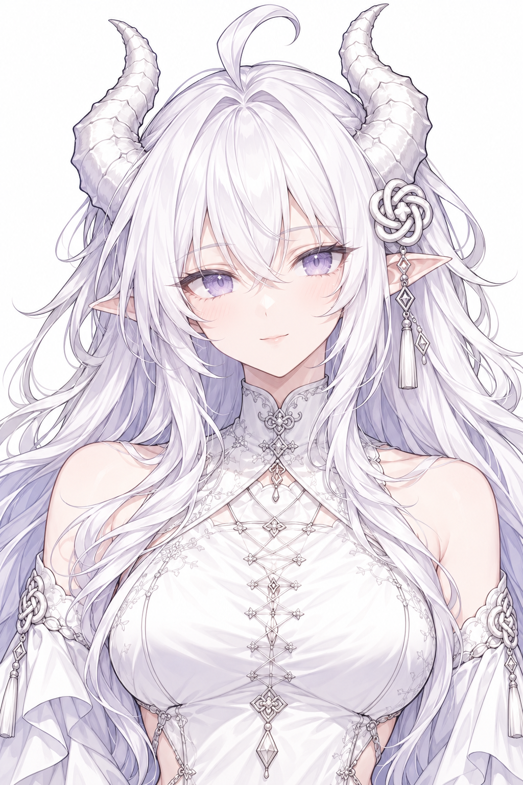
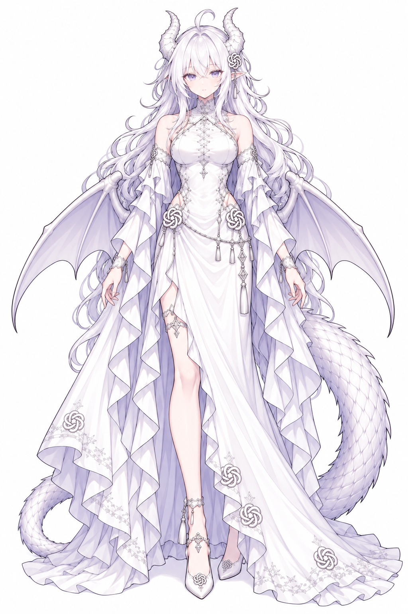
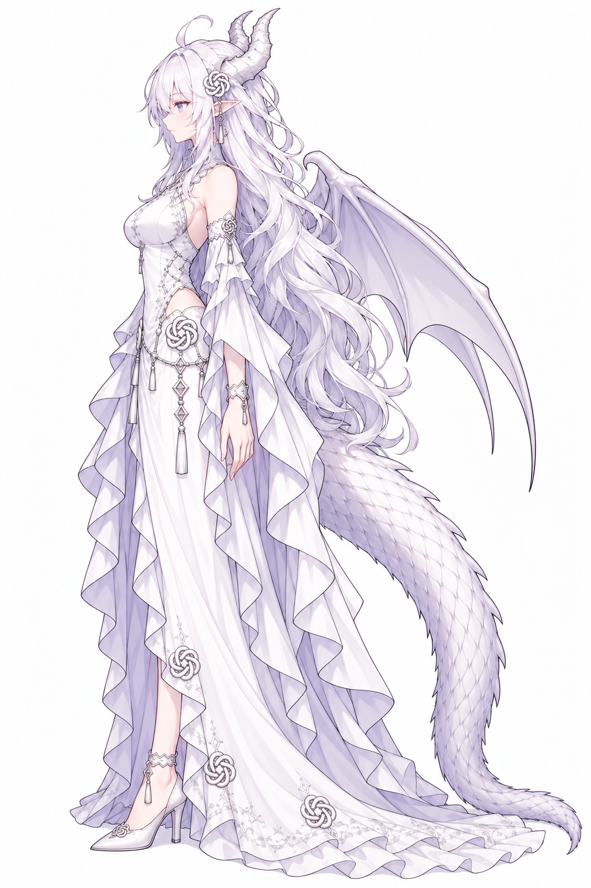
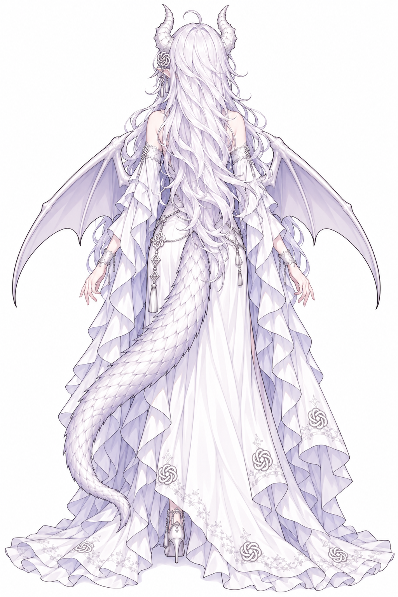
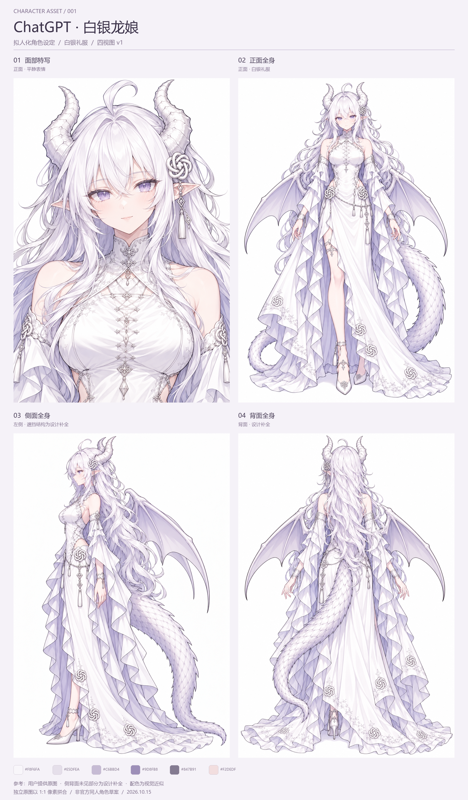
普通展示组 · 23张完整卡面
3张基础牌 + 20张普通牌。点击卡面查看大图；展开说明可查看独立插画、构图、模型主题、组合与修改入口。反馈时直接使用编号。
11—15号的基础数值暂取本地v0.98.3，待完整资料核对；16号随机消耗的目标范围待核定。其余按用户截图可见基础效果。本页为选图与拟名初稿，游戏尚未接入，升级效果本轮未展示。


早期6张技能插画试稿
这些是探索角色形象时的历史试稿，用于参考服装、表情和技能表现，不计入正式85张牌池。查看对应提示词。

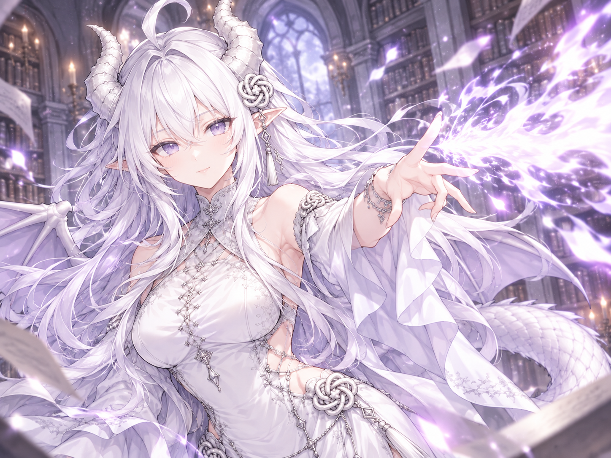

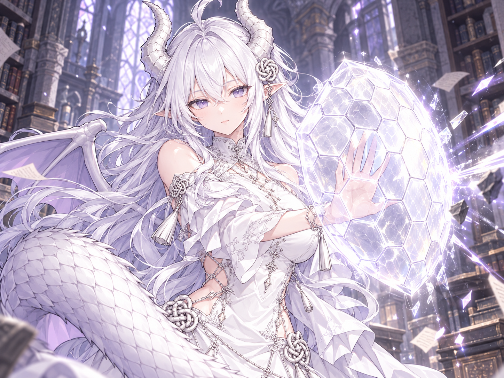

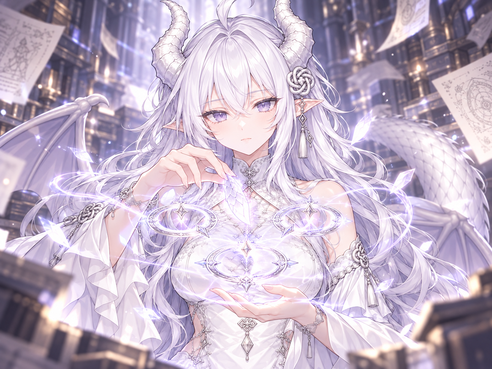

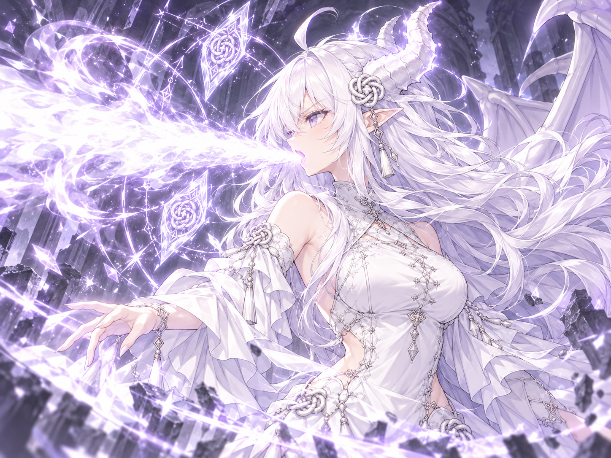

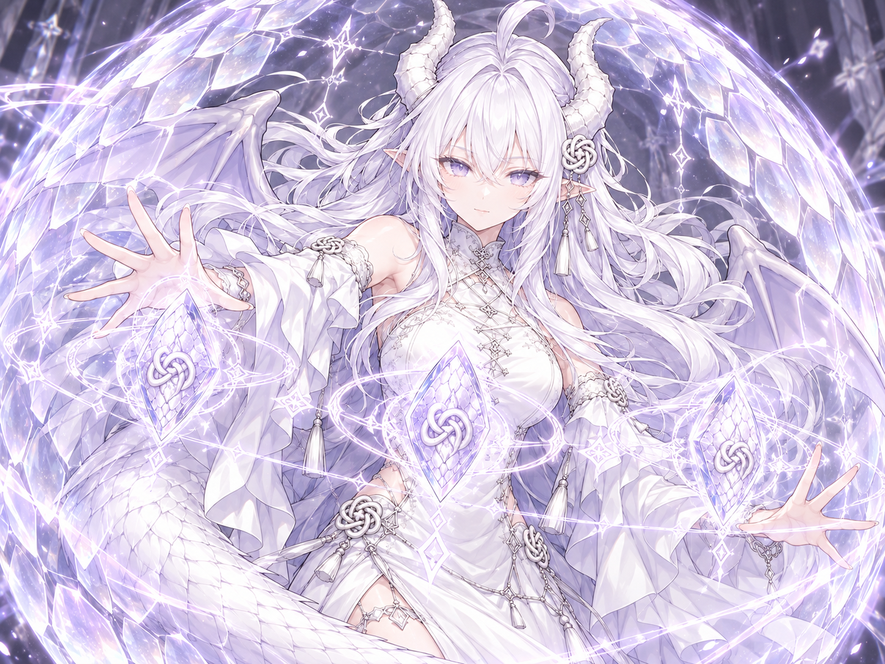

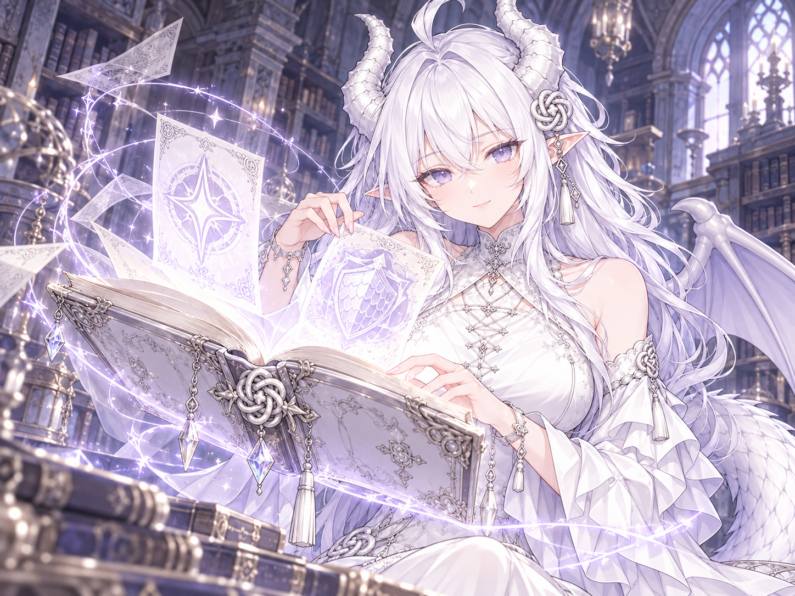
历史未采用稿（3张）
这些候选用于记录修改过程，不作为当前人物规范。